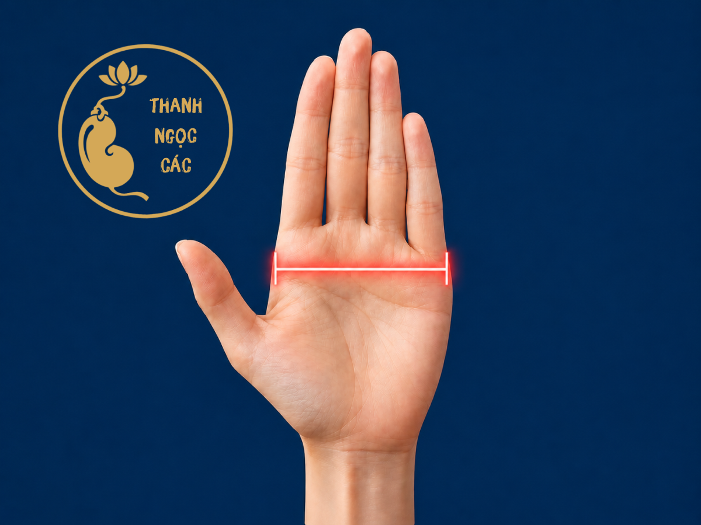
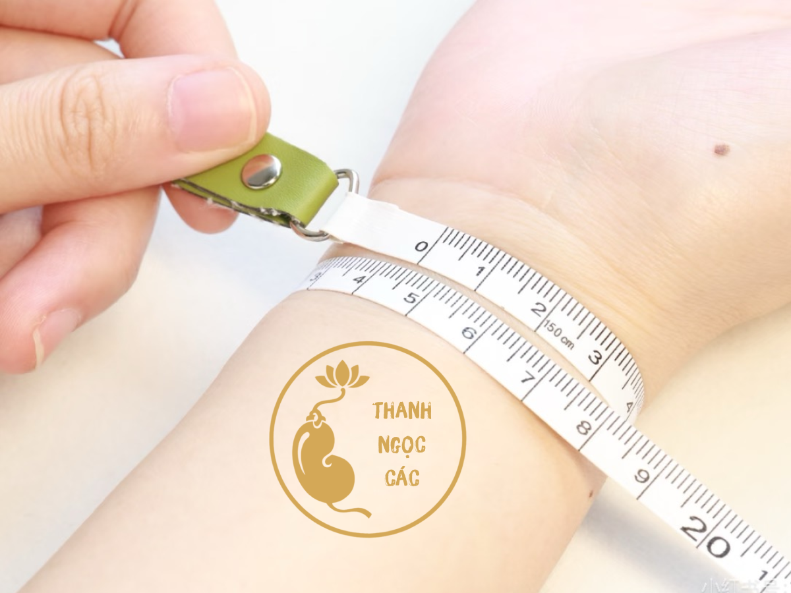

Hướng dẫn đo
Đo Chu Vi Mu Bàn Tay
Phương pháp cho kết quả sát nhất.
- Khép các ngón tay lại, kéo vòng chỉ sát qua lòng bàn tay.
- Đo ngang điểm lớn nhất của phần mu bàn tay.
- Ghi lại số đo theo milimét.
- Kết quả phù hợp cho vòng liền khối hoặc vòng bít.
Công cụ I
Bốn phương pháp đo chuyên dụng, giúp bạn tìm size vòng vừa vặn với cổ tay.
Công cụ đo size
Chọn phương pháp phù hợp với bạn
Mỗi phương pháp phù hợp với một thói quen đo khác nhau. Chọn cách tiện nhất với bạn.
Hướng dẫn đo
Phương pháp cho kết quả sát nhất.
Hướng dẫn đo
Phù hợp khi bạn không có thước dây.

Hướng dẫn đo
Phù hợp để tính cảm giác đeo thoải mái.

Phương pháp tham khảo
Dùng khi chưa thể đo trực tiếp.
Kết quả đo size vòng tay
Size vòng bản phù hợp với bạn
Gợi ý chọn: 55 – 57mm
Vòng đũa
54mm Nên xuống 1mm so với size chuẩn. Đeo gọn tay, đẹp dáng với vòng phỉ thúy tròn hoặc vòng đũa.Vòng bản
56mm Lựa chọn cân bằng nhất cho vòng bản: dễ lọt tay, giữ dáng đeo sang và vẫn có cảm giác chắc tay khi sử dụng hằng ngày.Rộng hơn
57mm Chọn khi bạn thích đeo lỏng, cổ tay dễ sưng nhẹ hoặc muốn tháo lắp thật thoải mái.Lưu ý: Vòng phỉ thúy là chất liệu cứng, không chỉnh size sau khi hoàn thiện. Nếu phân vân giữa vòng đũa và vòng bản, hãy ưu tiên đúng kiểu vòng bạn định mua.
Sản phẩm phù hợp
Vòng ngọc dành riêng cho size của bạn
Những chiếc vòng phỉ thúy có sẵn trong kho, vừa vặn với cổ tay của bạn.


Bí quyết đo chính xác
Những lưu ý từ nghệ nhân
Hãy đo tại vị trí bàn tay/cổ tay rộng nhất, không đo quá cao hoặc quá thấp.
Nếu kết quả chênh lệch, hãy đo lại và lấy số trung bình.
Ưu tiên thước dây may đo hoặc giấy, tránh dây thun và dây co giãn.
Dây đo nên ôm sát nhưng vẫn có thể luồn nhẹ một ngón tay.
Tay thuận và tay không thuận thường chênh nhau 2-3mm.
Nếu đã có vòng vừa tay, hãy đo đường kính trong của vòng đó để đối chiếu.
Bài viết liên quan
Tìm hiểu thêm về vòng ngọc phỉ thúy
Hướng dẫn chọn mua
Phong thủy
Bảo quản
Cần thêm tư vấn?
Vẫn chưa chắc về size? Nhắn Zalo để được tư vấn trực tiếp bởi nhân viên có kinh nghiệm.